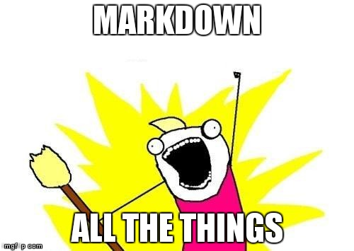

Markdownest un type de syntaxe permettant la modification du style d'un texte sur le web. Grâce à l'utilisation de quelques caractères non-alphabétiques (par exemple: # ou *), il est possible de faire apparaître le texte ciblé en gras ou en italique, d'ajouter des images, ou encore de créer des listes parmi tant d'autres choses.
Sur GitHub, la syntaxe Markdown peut être utilisée à différents endroits:
.md ou .markdown comme extension.Voici une vue d'ensemble de ce que la syntaxe Markdown permet de faire sur GitHub ou dans ses propres fichiers texte.
Le symbole # permet de configurer la ligne de texte qui suit comme étant un titre. Il peut être utilisé plusieurs fois afin de créer un sous-titre à chaque fois moins important.
# Ceci est un titre
#### Ceci est également un titre
###### Ceci est toujours un titre
Ce texte est en italique
Ce texte est en gras
Il est possible de les combiner
Pour accentuer un texte (en italique ou en gras, par exemple), il suffit d'entourer la portion de texte souhaitée par les symboles *ou _(italique), ou **ou __(gras).
*Ce texte sera en italique*
_Ce texte sera également en italique_
**Ce texte sera en gras**
__Ce texte sera également en gras__
_Il est **possible** de les combiner_
Attention: bien qu'il existe deux manières différentes d'accentuer son texte, celles-ci ne sont pas interchangeables (**cette portion de texte ne sera pas en gras__)!
Il y a deux types de listes: les listes à puces et les listes organisées. Markdown requiert des symboles différents en fonction de la liste utilisée.
Le symbole * permet la création d'une liste à puce. A noter qu'il est possible de les imbriquer.
* Une puce
* Une autre puce
* Une sous-puce
* Une autre sous-puce
* Et encore une autre puce !
Pour créer une liste organisée, il suffit de commencer les portions de texte souhaitées par des numéros, suivis du symbole ..
* Une puce
* Une autre puce
* Et encore une autre puce !
Pour demarquer une citation il suffit d'ajouter un > devant votre citation.
Cela se présente de cette manière.
Il suffit de mettre le mot sur lequel vous souhaitez faire votre lien entre crochets [ ], puis votre lien entre parenthèses ( ).
Rendez-vous sur Github !
Pour désigner un mot ou une phrase comme code, placez-le entre guillemets (`).
Cela se présente de cette manière :
<p>j'écris mon code</p>L'ajout d'image peut se faire de 2 manières:
![image alt]
(cheminVersImage/nomImage.extention)

Notez que si votre image ce trouve au même niveau que votre document, il n'est pas nécessaire de préciser le chemin.
![image alt]
(https://lieuHebergementDeImage.com/ouSeTrouve/nomImage.extention)
Notez que vous pouvez copier le lien via un simple click droit + copier le lien de l'image.